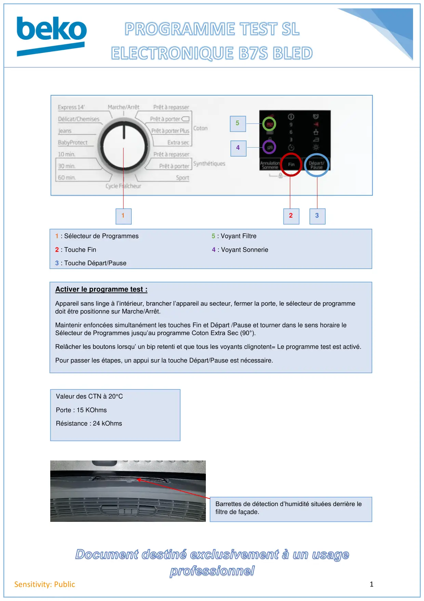
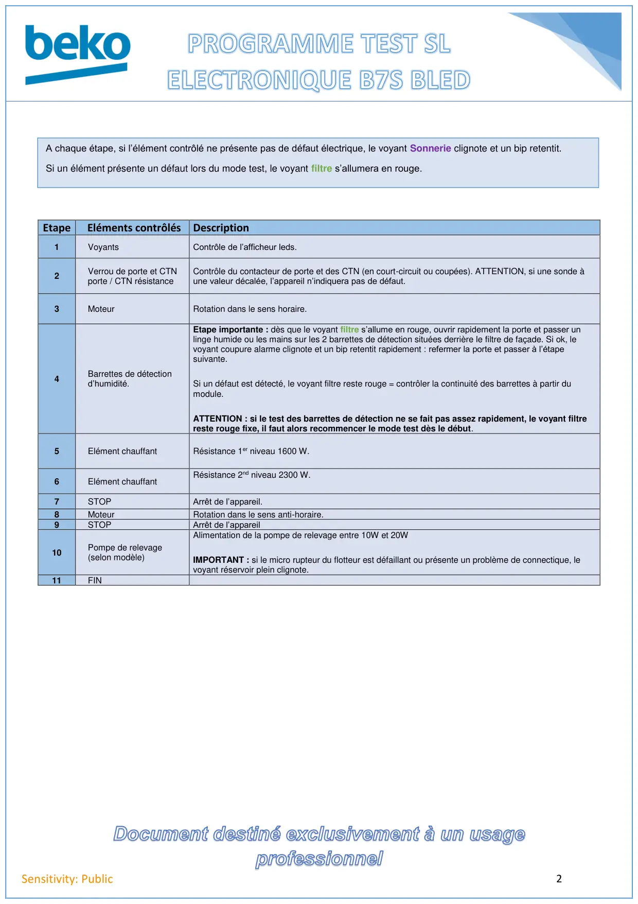

Prog Test seche linge Condenseur B7S BLED

1Sensitivity: Public1231 : Sélecteur de Programmes 5 : Voyant Filtre2 : Touche Fin 4 : Voyant Sonnerie3 : Touche Départ/PauseActiver le programme test :Appareil sans linge à l’intérieur, brancher l’appareil au secteur, fermer la porte, le sélecteur de programmedoit être positionne sur Marche/Arrêt.Maintenir enfoncées simultanément les touches Fin et Départ /Pause et tourner dans le sens horaire leSélecteur de Programmes jusqu’au programme Coton Extra Sec (90°).Relâcher les boutons lorsqu’ un bip retenti et que tous les voyants clignotent= Le programme test est activé.Pour passer les étapes, un appui sur la touche Départ/Pause est nécessaire.54Barrettes de détection d’humidité situées derrière lefiltre de façade.Valeur des CTN à 20°CPorte : 15 KOhmsRésistance : 24 kOhms
1 / 2
2Sensitivity: PublicEtape Eléments contrôlésDescription1VoyantsContrôle de l’afficheur leds.2Verrou de porte et CTNporte / CTN résistanceContrôle du contacteur de porte et des CTN (en court-circuit ou coupées). ATTENTION, si une sonde àune valeur décalée, l’appareil n’indiquera pas de défaut.3MoteurRotation dans le sens horaire.4Barrettes de détectiond’humidité.Etape importante : dès que le voyant filtre s’allume en rouge, ouvrir rapidement la porte et passer unlinge humide ou les mains sur les 2 barrettes de détection situées derrière le filtre de façade. Si ok, levoyant coupure alarme clignote et un bip retentit rapidement : refermer la porte et passer à l’étapesuivante.Si un défaut est détecté, le voyant filtre reste rouge = contrôler la continuité des barrettes à partir dumodule.ATTENTION : si le test des barrettes de détection ne se fait pas assez rapidement, le voyant filtrereste rouge fixe, il faut alors recommencer le mode test dès le début.5Elément chauffantRésistance 1er niveau 1600 W.6Elément chauffantRésistance 2nd niveau 2300 W.7STOPArrêt de l’appareil.8MoteurRotation dans le sens anti-horaire.9STOPArrêt de l’appareil10Pompe de relevage(selon modèle)Alimentation de la pompe de relevage entre 10W et 20WIMPORTANT : si le micro rupteur du flotteur est défaillant ou présente un problème de connectique, levoyant réservoir plein clignote.11FINA chaque étape, si l’élément contrôlé ne présente pas de défaut électrique, le voyant Sonnerie clignote et un bip retentit.Si un élément présente un défaut lors du mode test, le voyant filtre s’allumera en rouge.
2 / 2